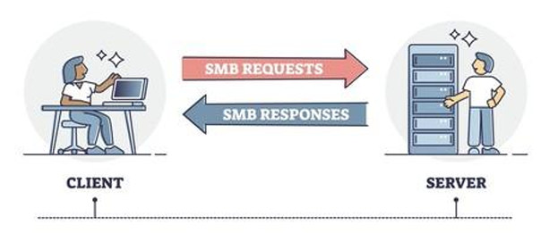

📂 SMB (Server Message Block) Protocol
📌 1. Overview
SMB (Server Message Block) is a network communication protocol used for providing shared access to files, printers, and serial ports between nodes on a network. It mostly works on the Application Layer (Layer 7).
- Analogy: Think of it as a "Waiter" in a restaurant. You (Client) ask the waiter for a specific dish (File) from the Kitchen (Server). The waiter takes your request, goes to the kitchen, gets the dish, and serves it to you.
- Primary OS: Native to Windows, but widely supported on Linux (via Samba) and macOS.
⚙️ 2. How it Works (Architecture)
SMB operates on a Client-Server request-response model.
- Session Setup: Client connects to Server and authenticates (Username/Password).
- Tree Connect: Client connects to a specific Share (e.g.,
\\Server\Share). - File Operations: Client sends commands like
Open,Read,Write,Close. - Tree Disconnect: Client leaves the Share.
+-------------+ +-------------+
| Client | | Server |
| (Windows PC)| | (File Srvr) |
+-------------+ +-------------+
| |
| (1) Session Setup (Login) |
+----------------------------------------> |
| |
| (2) Tree Connect (Connect to Share) |
+----------------------------------------> |
| |
| (3) SMB_COM_READ (Give me file.txt) |
+----------------------------------------> |
| |
| (4) DATA (Here is the file) |
| <----------------------------------------+
| |
🛣️ Ports Used
| Port | Description | Status |
|---|---|---|
| 445 | Direct TCP. The modern standard for SMB over TCP/IP. | Active |
| 139 | NetBIOS Session Service. Older, relies on NetBIOS layout. | Legacy |
⚠️ Security Warning: Port 445 is heavily targeted by hackers (e.g., WannaCry). NEVER expose Port 445 directly to the public internet.
⏳ 3. Versions History
| Version | Name | Description | Status |
|---|---|---|---|
| SMB v1 | CIFS | Ancient (1980s). Very chatty, insecure. Vulnerable to WannaCry. | 🛑 DISABLED |
| SMB v2 | SMB 2.0 | Introduced with Vista (2006). Reduced chattiness, supported WANs. | ✅ Active |
| SMB v3 | SMB 3.0 | Introduced with Win 8 (2012). Added Encryption and Multi-channel. | 🚀 Current Standard |
🏗️ 4. Where to Use SMB? (Common Use Cases)
- File Servers in Offices:
- Storing Excel sheets, PDFs, and official documents in a central location (
Z:drive).
- Storing Excel sheets, PDFs, and official documents in a central location (
- Printer Sharing:
- Allowing multiple computers to print to a single shared office printer.
- Active Directory (SYSVOL):
- Windows Domain Controllers use SMB to replicate Group Policies and Login Scripts.
- Home Media Servers:
- Streaming movies from a NAS to a TV or PC (Plex often reads from SMB).
- Distributed Applications:
- Applications that need to read/write config files from a central location.
✅ 5. Key Benefits
- Native Windows Support: No extra software needed on Windows. Just type
\\Servername\Sharename. - File Locking: Prevents two people from editing the same Excel sheet at the same time (The "Read-Only" notification).
- Authentication Integrated: Works seamlessly with Active Directory (AD). Permissions follow the user identity.
- Performance (SMBv3): Features like SMB Direct (RDMA) and SMB Multichannel make it incredibly fast over high-speed networks.
☁️ 6. Azure Context
How does SMB fit into the Cloud?
- Azure Files: A fully managed "Serverless" SMB share in the cloud.
- Benefit: You don't need to manage a Windows Server VM.
- Usage: Create a Storage Account -> Create File Share -> Mount using the generated PowerShell script (uses Port 445).
- Azure NetApp Files: Enterprise-grade high-performance file storage (supports SMB and NFS).
💡 7. Hinglish Explanation
The "Waiter" Analogy
- Scenario: Tum ek restaurant mein ho.
- Client (Tum): Tumhe
Menu.txtchahiye. - Server (Kitchen/Chef): Jaha
Menu.txtrakha hai. - SMB (Waiter): Tum chillake kitchen mein baat nahi karte. Tum Waiter (SMB) ko bolte ho, "Bhai, Menu lana". Waiter kitchen jata hai, menu uthata hai, aur tumhe laake deta hai.
- Port 445: Ye wo rasta hai jaha se waiter aata-jata hai. Agar restaurant ka darwaza (Firewall) band hai, toh waiter nahi aa payega.
Why use SMB?
- Agar puri family ko ek hi album dekhni hai, toh 10 copy mat banao. Album ko Dining Table (Server) pe rakh do (SMB Share). Sab wahi aake dekh lenge.